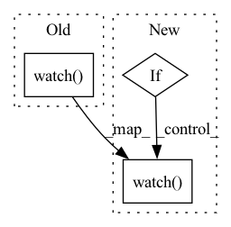

Pattern ID :13811
Before Change
def fit(self, logger, log_interval=10):
wandb.init(project="Coati", name=time.strftime("%Y-%m-%d %H:%M:%S", time.localtime()))
wandb.watch( self.model)
total_loss = 0
// epoch_bar = tqdm(range(self.epochs), desc="Epochs", disable=not is_rank_0())
step_bar = tqdm(range(len(self.train_dataloader) // self.accimulation_steps * self.max_epochs),
desc=f"steps",After Change
num_training_steps=max_steps)
def fit(self, logger, use_wandb: bool = False):
if use_wandb:
wandb.init(project="Coati", name=time.strftime("%Y-%m-%d %H:%M:%S", time.localtime()))
wandb.watch( self.model)
total_loss = 0
// epoch_bar = tqdm(range(self.epochs), desc="Epochs", disable=not is_rank_0())
step_bar = tqdm(range(len(self.train_dataloader) // self.accimulation_steps * self.max_epochs),
desc=f"steps",In pattern: SUPERPATTERN
Frequency: 3
Non-data size: 3
Instances Fragment ID: 46066518
Project Name: hpcaitech/colossalai
Commit Name: 2a951955ade14fd067bc5bee34a5ff7e57513ac6
Time: 2023-04-26
Author: lhx0217@gmail.com
File Name: applications/Chat/coati/trainer/sft.py
M Class Name: SFTTrainer
N Class Name: SFTTrainer
M Method Name: fit(3)
N Method Name: fit(3)
M Parent Class: Trainer
N Parent Class: Trainer
M File Name: applications/Chat/coati/trainer/sft.py
N File Name: applications/Chat/coati/trainer/sft.py
M Start Line: 73
M End Line: 114
N Start Line: 73
N End Line: 115
Before Change
// wandb logging
wandb_logger = WandbLogger(name=args.name, project=args.project)
wandb_logger.watch( model, log="gradients", log_freq=100)
wandb_logger.log_hyperparams(args)
callbacks = []
// lr loggingAfter Change
callbacks = []
// wandb logging
if args.wandb:
wandb_logger = WandbLogger(
name=args.name, project=args.project, entity=args.entity, offline=args.offline
)
wandb_logger.watch( model, log="gradients", log_freq=100)
wandb_logger.log_hyperparams(args)
// lr logging
callbacks.append(LearningRateMonitor(logging_interval="epoch"))
Fragment ID: 46066517
Project Name: vturrisi/contrastive-learning
Commit Name: c38d995fa647676d6c4afdbc8aa0c578b666e9a5
Time: 2021-05-06
Author: vt.turrisi@gmail.com
File Name: main_contrastive.py
M Class Name: AnonimousClass
N Class Name: AnonimousClass
M Method Name: main(0)
N Method Name: main(0)
M Parent Class:
N Parent Class:
M File Name: main_contrastive.py
N File Name: main_contrastive.py
M Start Line: 192
M End Line: 253
N Start Line: 191
N End Line: 276
Before Change
if args.encoder_structure.lower() == "vit":
en_attn_layers = encoder.module.attn_layers if available_gpus > 1 else encoder.attn_layers
de_attn_layers = decoder.module.net.attn_layers if available_gpus > 1 else decoder.net.attn_layers
wandb.watch( (en_attn_layers, de_attn_layers))
model = Model(encoder, decoder, args)
if training:
// check if largest batch can be handled by system
batchsize = args.batchsize if args.get(After Change
encoder.to(args.device)
decoder.to(args.device)
model = Model(encoder, decoder, args)
if args.wandb:
import wandb
wandb.watch( model)
if training:
// check if largest batch can be handled by system
batchsize = args.batchsize if args.get(
"micro_batchsize", -1) == -1 else args.micro_batchsize Fragment ID: 46066515
Project Name: lukas-blecher/latex-ocr
Commit Name: 5cbbcb929874a0f55434dd4a328ea38ee8683d12
Time: 2022-05-17
Author: yuhang.tao.email@gmail.com
File Name: pix2tex/models/utils.py
M Class Name: AnonimousClass
N Class Name: AnonimousClass
M Method Name: get_model(2)
N Method Name: get_model(2)
M Parent Class:
N Parent Class:
M File Name: pix2tex/models/utils.py
N File Name: pix2tex/models/utils.py
M Start Line: 29
M End Line: 54
N Start Line: 47
N End Line: 51